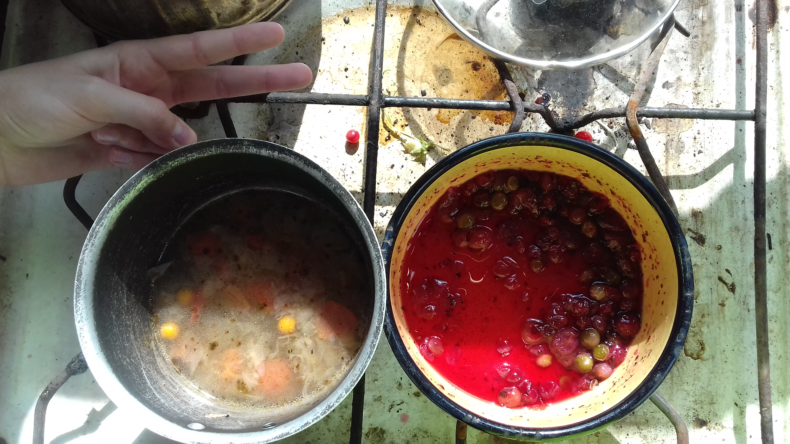

Сайт любителя кур и котов ;)
.
Секретный раздел на сайте про зельеварение
На главную
Я секретный раздел, доступен только по клику на картинку!
Зелье: Котел крепкой горячей любви
Первая сотавляющая:
- цветы флокса
- 3 лепестка розы
- рябина
- соль 2 щеп.
- вода
- лаврушка
- базилик
- перец черн.
- помидор 2 шт
- приправа для шашлыка
- приправа птица на углях
- приправа стейк аппетиный
Скормили курам
Вторая сотавляющая:
- крыжовник
- горох
- вишня
- сахар
- вода
- мак
- кр. смороддина
Сьели сами
